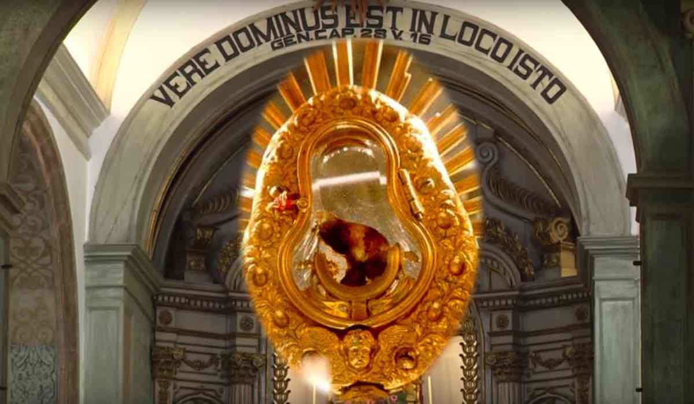

A woman living in Santarém, Portugal, in the 13th century was distressed that her husband was
unfaithful to her and she decided to consult a sorceress for help. The sorceress told her
the price of her services was a consecrated host. She went to Mass at The Church of St.
Stephen and received the Eucharist on her tongue, removed the Eucharist from her mouth,
wrapped it in her veil, and headed to the door of the church. But before she got out, the
host began to bleed. When she got home, she put the bloodied host in a trunk. That night,
a miraculous light emanated from the trunk. She repented of what she had done and the next
morning confessed to her priest. Her priest came and retrieved the host and took it back
to the church. After an investigation and approval of the miracle, the church was renamed
Church of the Holy Miracle, and the bloodied host remains on display to this day.